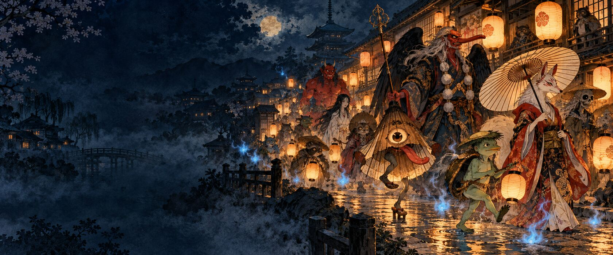
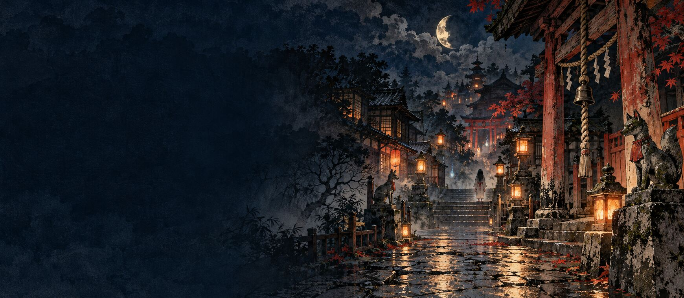

百鬼絵巻 · ЭНЦИКЛОПЕДИЯ
Ночной атлас ёкаев
Двенадцать существ, иллюстрированные легенды, живые истории и игра на узнавание.
Открыть атлас ↗
夜の探偵 · ИНТЕРАКТИВНЫЙ ДЕТЕКТИВ
Тайна лунного колокольчика
Четыре места ночного Киото, восемь улик, странные свидетели и несколько развязок.
Начать расследование ↗